Overview
A latent Gaussian model (LGM), the workhorse of R-INLA, places a Gaussian prior on a latent field: a random walk, an autoregression, a spatial effect, or a set of random effects. That prior is convenient but rigid, because it assumes Gaussianity everywhere. Real data often break this assumption in just a few places, such as a sudden jump in a time series, one outlying subject, a sharp boundary between regions, or a local hotspot in space. A Gaussian model then has to compromise. It either over-smooths the interesting feature or inflates the variance everywhere to accommodate it.
ngvb relaxes that single assumption. It keeps everything
you already have, the same INLA model and the same code, and replaces
the Gaussian driving noise with a heavier-tailed one. The result adds
flexibility only where the data ask for it and falls back to the
Gaussian model everywhere else. Two functions do the work, and both take
an ordinary inla fit that was run with
control.compute = list(config = TRUE):
-
ng.check(fit)asks whether you should relax the Gaussian assumption, and where. -
ngvb(fit)fits the non-Gaussian extension.
The model in one paragraph
Every LGM writes its latent field
through a model-specific dependency matrix
that turns
into independent Gaussian increments,
For a
random walk
,
for an autoregression
,
and so on. The non-Gaussian model keeps the same
but lets each increment have its own variance
,
The mixing variables
carry the local flexibility. Where
the model is Gaussian, and where
is inflated the increment is allowed to be unusually large. A single
non-Gaussianity parameter
controls how far
may stray from
,
and
is exactly the Gaussian model. Conditional on
the field is still Gaussian, with precision
ngvb fits the model with a short variational-Bayes loop
that repeatedly calls INLA with
fixed and then updates
and
.
The prior on
is an exponential (a penalised-complexity prior with rate
alpha.eta, default
)
that shrinks toward the Gaussian model, so non-Gaussianity has to earn
its place. Increase alpha.eta for stronger shrinkage.
Two variational algorithms are available. The default,
method = "SVI", is a structured mean-field scheme that
updates
and
in turn, and it is the more reliable choice. The alternative,
method = "SCVI", integrates
out of the
update analytically and so converges in fewer iterations, but its
collapsed marginal can over-shrink a weak yet genuine effect all the way
to the Gaussian model.
Which models and likelihoods are supported
The non-Gaussianity in ngvb lives entirely in the latent
field, on its driving noise, and never touches the observation model. So
every INLA likelihood is available: Gaussian, Poisson,
binomial, negative binomial, survival families, and the rest all work
unchanged. You just fit your LGM as usual and hand it to
ng.check() or ngvb().
The latent components split into three groups.
Detected automatically. If your fit uses one of
these, ngvb() and ng.check() find it with no
extra arguments: iid, rw1, rw2,
ar1, besag (the intrinsic CAR),
spde / spde2 (Matern fields), and
seasonal. Each of these is a single operator applied to
independent noise, so it has the dependency matrix
the method needs.
Added by hand. Some models are not auto-detected but
are still described by
,
so you can build them with ngvb_operator() which expects
the matrix
,
the vector
.
This covers the simultaneous autoregression (sar) or the
Ornstein-Uhlenbeck process (ou). It is also possible to use
the matrices and operators of the ngme2 package to define
the LnGM and examples are given at the end.
Not compatible. Some components are not a single
operator applied to one field, and the method does not apply to them.
The main cases are the additive spatial models bym,
bym2, besag2 (a latent field that is a sum of
parts), the conditionally specified besagproper, the copy
and mixture constructions generic1, generic2,
generic3, copy, scopy,
z, the measurement-error models mec,
meb, and the nonlinear-covariate effects sigm,
revsigm, log1exp, logdist. For an
additive model such as bym, the practical fix is to split
it into its besag and iid parts as two
separate f() terms, which ngvb() then extends
jointly.
Priors carry over the same way: pc.prec,
loggamma, and normal precision priors on the
original f() term are read from the fit and reused
automatically; anything else falls back to a default prior with a
warning.
A time series with jumps
jumpts is a series that is smooth apart from two abrupt
jumps.
ggplot(jumpts, aes(x, y)) +
geom_line(colour = "grey70") +
geom_point(colour = "grey30", size = 1.3) +
labs(title = "jumpts", x = "time", y = "y") +
theme_minimal(base_size = 12)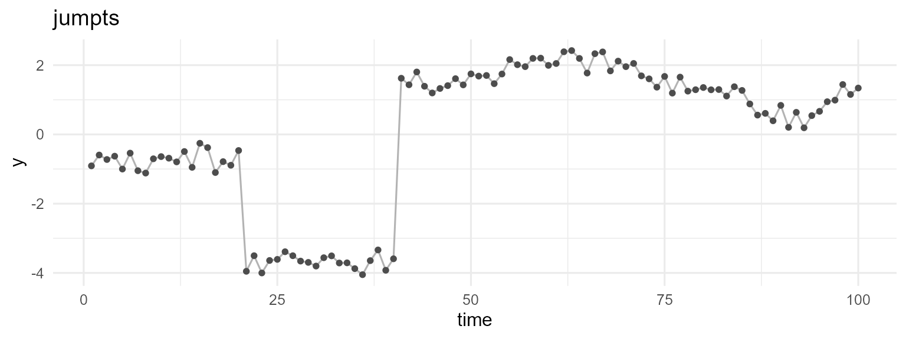
A first-order random walk models the series through its increments, which is the operator with the first-difference matrix. A Gaussian RW1 forces every increment to share the same variance, so it cannot tell a jump from ordinary noise. Fit it with INLA:
Now check whether the latent Gaussian assumption holds:
check <- ng.check(LGM, compute.fixed = FALSE)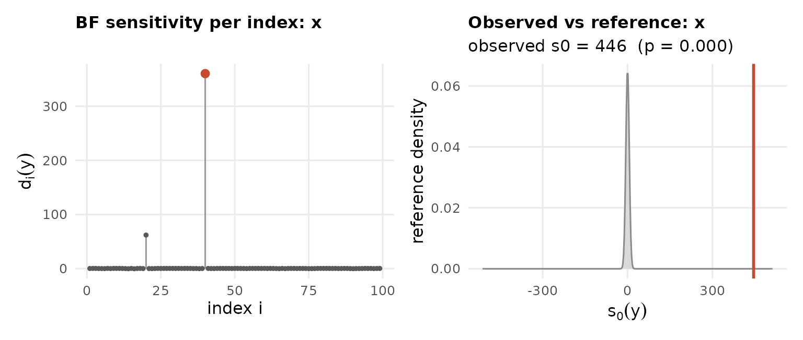
The left panel is the per-index sensitivity , which measures how much the evidence would improve if increment were allowed to be non-Gaussian. It spikes at the two jumps. The right panel compares the observed overall sensitivity (the vertical line) against the distribution it would have under a truly Gaussian field (the grey curve). The observed value sits far out in the tail, with , so the Gaussian RW1 is inadequate and we know exactly where.
Now we extend it to non-Gaussianity. The model is auto-detected, so this is a single call:
LnGM <- ngvb(LGM)
#> Components: x [rw1]
#> ngvb: converged after 24 iteration(s); E[eta] = 3.742
plot(LnGM)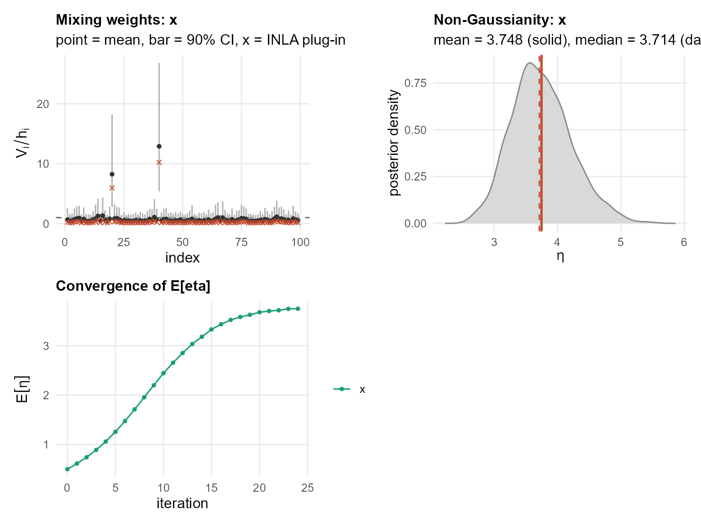
For each component the plot shows the mixing weights (the posterior mean with a 90 percent credible interval, and a cross at the plug-in value that INLA is actually refit with, which sits a little below the mean because is right-skewed). The final panel tracks across the iterations. The mixing variables are inflated precisely at the two jumps and sit near one elsewhere, so the model bought local flexibility exactly where it was needed and stayed Gaussian in between. The non-Gaussianity parameter is clearly positive.
Beyond the point estimate, you can integrate the mixing variables V out entirely by sampling from their variational posterior and refitting the LGM at each draw. This gives the Bayes factor against the Gaussian model, and, pooled with importance weights, posterior summaries of anything the underlying inla() fit reports:
samples <- ngvb_sample(LnGM, n.samples = 30)
bayes.factor(samples) # LnGM vs. LGM marginal-likelihood ratio
#> Bayes factor (non-Gaussian vs Gaussian): 9.95e+23
#> log10 BF = 24.00 (decisive)
#> weight ESS = 2.2 of 30 draws
summary(samples) # importance-weighted summaries, V integrated out
#> Latent non-Gaussian model, V integrated out over 30 draws
#> Bayes factor vs Gaussian model: 9.95e+23 (log10 = 24.00), weight ESS 2.2
#>
#> Fixed effects:
#> (none)
#>
#> Hyperparameters:
#> mean sd
#> Precision for the Gaussian observations 3583.4354 13654.6354
#> Theta1 for x 2.1163 0.4493
#>
#> Random effects:
#> $x (100 nodes)
#> ID mean sd
#> 1 1 -0.8755 0.1419
#> 2 2 -0.6634 0.1094
#> 3 3 -0.7070 0.0956
#> 4 4 -0.6998 0.0999
#> 5 5 -0.8781 0.1213
#> 6 6 -0.7240 0.1306
#> ... 94 more row(s); use what = "random" to print in fullOn the usual scale a
Bayes factor above
,
,
or
is substantial, strong, or decisive evidence for the non-Gaussian model.
Here it is far into the decisive range. The ess field is
the effective number of draws behind the estimate; if it is small, raise
n.samples.
Geostatistical data: a Matern (SPDE) field
weatherdata, bundled with the package, holds pressure
readings across the Pacific Northwest. Build the mesh first and plot the
stations over it:
w <- read.csv(system.file("extdata", "weatherdata.csv", package = "ngvb"))
mesh <- inla.mesh.2d(loc = w[, c("lon", "lat")], max.edge = c(1.5, 2.5),
cutoff = 0.3, max.n.strict = 400)
geo.plot(w[, c("lon", "lat", "press")], mesh = mesh, title = "pressure",
palette = "RdBu")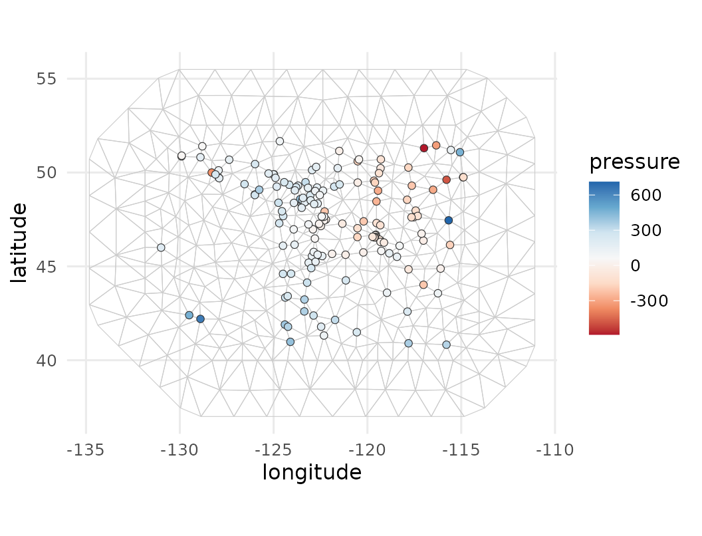
We model pressure as a continuous Matern field through the SPDE
approach, the standard tool for point-referenced spatial data. The field
solves a stochastic PDE whose finite-element form gives the operator
,
where
and
are the mass and stiffness matrices of the mesh. A Gaussian Matern
smooths the whole surface uniformly, while the non-Gaussian version lets
a few locations depart more sharply. ngvb reads
straight from the fitted spde object, so you pass nothing
extra.
spde <- inla.spde2.pcmatern(mesh, alpha = 2,
prior.range = c(1, 0.5), # P(range < 1) = 0.5
prior.sigma = c(10, 0.1)) # P(sigma > 1) = 0.01
A <- inla.spde.make.A(mesh, loc = as.matrix(w[, c("lon", "lat")]))
stk <- inla.stack(tag = "est", data = list(y = w$press), A = list(A),
effects = list(s = 1:spde$n.spde))
LGM <- inla(y ~ -1 + f(s, model = spde), data = inla.stack.data(stk),
control.predictor = list(A = inla.stack.A(stk)),
control.compute = list(config = TRUE))
chk <- ng.check(LGM, compute.random = TRUE)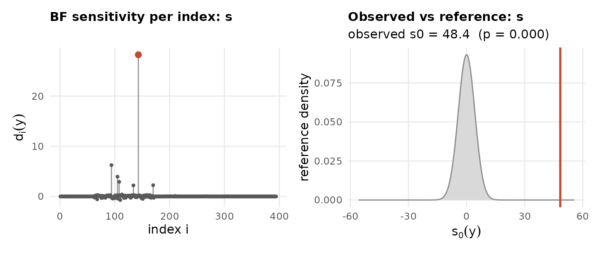
ng.check()’s diagnostic
above is one instance of a more general result (Theorem 2 of Cabral,
Bolin & Rue, JRSS-B 2025): the sensitivity of any
posterior summary to relaxing Gaussianity is a covariance, computable
entirely from the Gaussian fit, without ever running
ngvb(). Two instances are built in: the sensitivity of a
covariate’s coefficient (chk$sens.fixed, one column per
fixed effect) and the sensitivity of the latent field’s own posterior
mean at every node (chk$sens.random$s, available because
ng.check() was called with
compute.random = TRUE above). So before ever fitting the
non-Gaussian model, we can already map where its predictions are
expected to move the most:
nodes.sens <- data.frame(lon = mesh$loc[, 1], lat = mesh$loc[, 2], sens = chk$sens.random$s)
geo.plot(nodes.sens, mesh = mesh, title = "sensitivity of posterior mean", palette = "RdBu")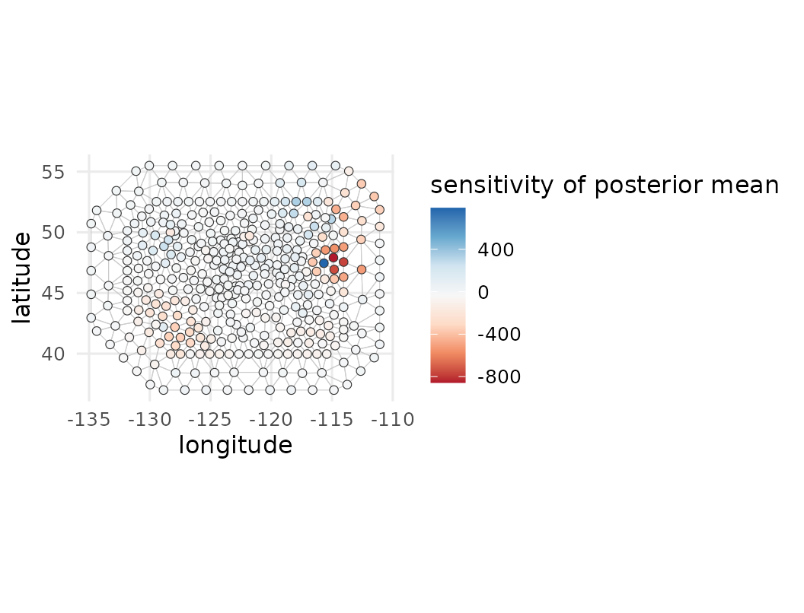
This map is computed entirely from the Gaussian fit above;
ngvb() has not run yet. We can tell which regions our
spatial predictions will change the most, and also the direction. Blue
means that the posterior mean of the latent field will take larger
values once we fit the non-Gaussian model.
LnGM <- ngvb(LGM)
#> Components: s [spde]
#> ngvb: reached the iteration limit after 30 iteration(s); E[eta] = 0.096
plot(LnGM)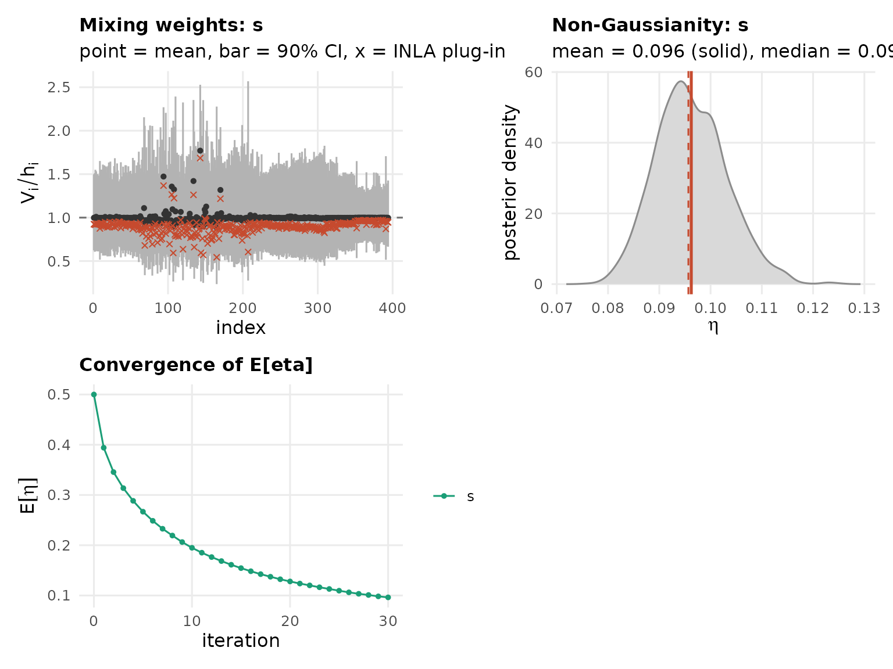
The mixing variables live on the mesh nodes, so we can map them back over space. We plot the ratio , which is one where the field is Gaussian and larger where it departs from a uniform Matern (for the SPDE the weights are the mesh mass, so rather than is the quantity to look at):
nodes <- data.frame(lon = mesh$loc[, 1], lat = mesh$loc[, 2],
Vh = LnGM$V$s / LnGM$h$s)
geo.plot(nodes, mesh = mesh, title = "V/h")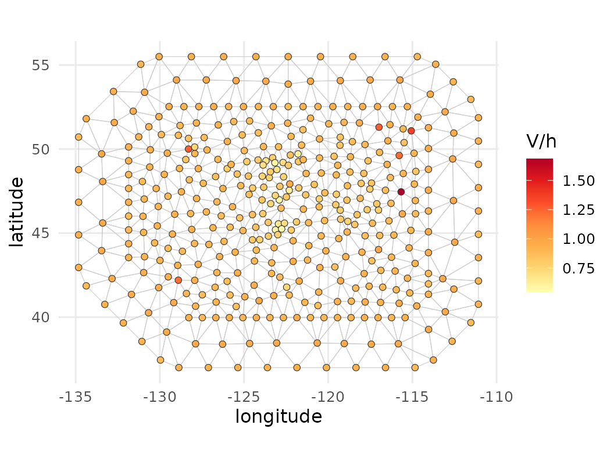
samples <- ngvb_sample(LnGM, n.samples = 30, seed = 1)
bayes.factor(samples)
#> Bayes factor (non-Gaussian vs Gaussian): 47.1
#> log10 BF = 1.67 (strong)
#> weight ESS = 12.9 of 30 drawsngvb_sample() also pools the latent field itself through
summary(samples, what = "random"), so we can now compare
the sensitivity preview above against the actual before/after change in
the posterior mean:
post <- summary(samples, verbose = FALSE)
diff <- post$random$s$mean - LGM$summary.random$s$mean
nodes.diff <- data.frame(lon = mesh$loc[, 1], lat = mesh$loc[, 2], diff = diff)
geo.plot(nodes.diff, mesh = mesh, title = "LnGM - LGM (posterior mean)", palette = "RdBu")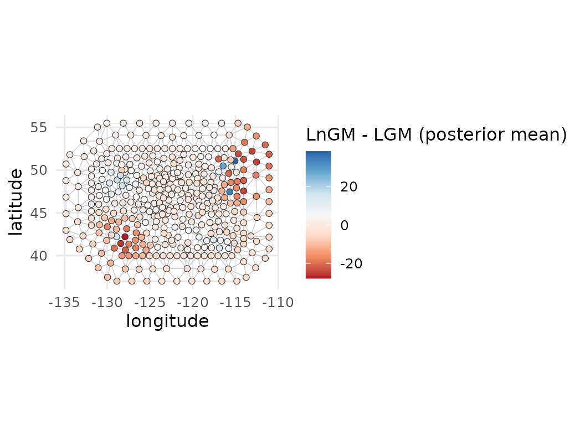
The two maps pick out the same location. The sensitivity preview correlates with the actual change in magnitude, and among the handful of nodes it flags as most sensitive the direction agrees too:
cat(sprintf("correlation(sensitivity, actual change) = %.2f\n",
cor(chk$sens.random$s, diff)))
#> correlation(sensitivity, actual change) = 0.78
top10 <- order(-abs(chk$sens.random$s))[1:20]
cat(sprintf("sign agreement among the 20 most sensitive nodes: %.0f%%\n",
100 * mean(sign(chk$sens.random$s[top10]) == sign(diff[top10]))))
#> sign agreement among the 20 most sensitive nodes: 100%Random intercepts and slopes
Orthodont records a growth measurement for 27 children
at four ages, together with a sex indicator and time coded two ways. A
quick look at the raw data frame:
Orthodont$age <- c(8, 10, 12, 14)[Orthodont$time + 1]
ggplot(Orthodont, aes(x = age, y = value)) +
geom_line(color = "#007fff") +
geom_point(shape = 1, color = "#007fff") +
scale_x_continuous(breaks = c(9, 11, 13)) +
facet_wrap(~ ifelse(Female == 1, paste0("F", subject), paste0("M", subject)), ncol = 11) +
theme_bw() +
theme(panel.spacing = unit(0, "lines"),
strip.background = element_rect(fill = "#ffe5cc"))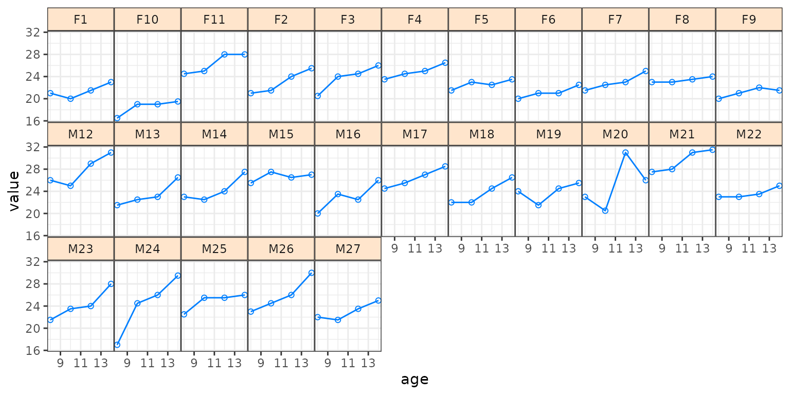
Two kinds of child-to-child variation matter here. Each child starts
at a different height, which is variation in the intercept, and each
child grows at a slightly different rate, which is variation in the
slope. We give every child its own intercept and its own slope, as two
iid random effects:
with
and
across children.
formula <- value ~ 1 + Female + time + tF +
f(subject, model = "iid") + # random intercept, one per child
f(subject2, time, model = "iid") # random slope, one per child
LGM <- inla(formula, data = Orthodont, control.compute = list(config = TRUE))Why make the random effects non-Gaussian? A Gaussian random effect
treats the children as exchangeable draws from one normal distribution.
If a child or two are genuine outliers, with an unusually high baseline
for example, the Gaussian either shrinks them toward the mean and hides
the outlier, or it widens the distribution for everyone to accommodate
them. A non-Gaussian random effect keeps a tight distribution for the
typical children and lets the few outliers stand out.
ng.check() reports one diagnostic per component:
ng.check(LGM, compute.fixed = FALSE)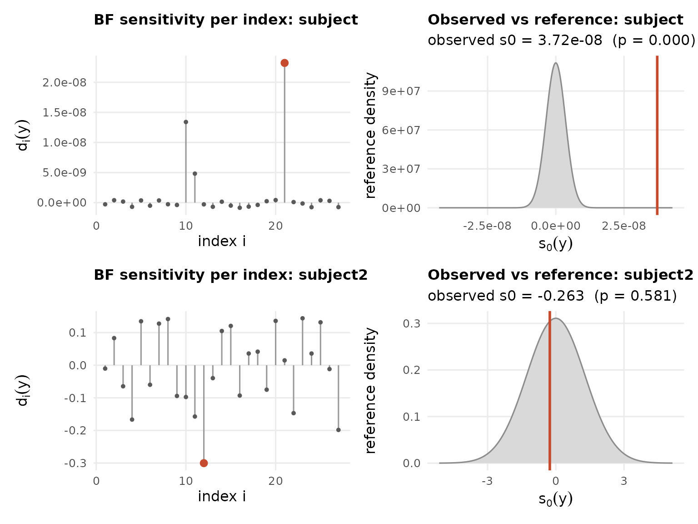
We see that no substancial evidence of non-Gaussianity was found (small ) for both random effects.
LnGM <- ngvb(LGM)
#> Components: subject [iid], subject2 [iid]
#> ngvb: reached the iteration limit after 30 iteration(s); E[eta] = 0.130, 0.203
plot(LnGM)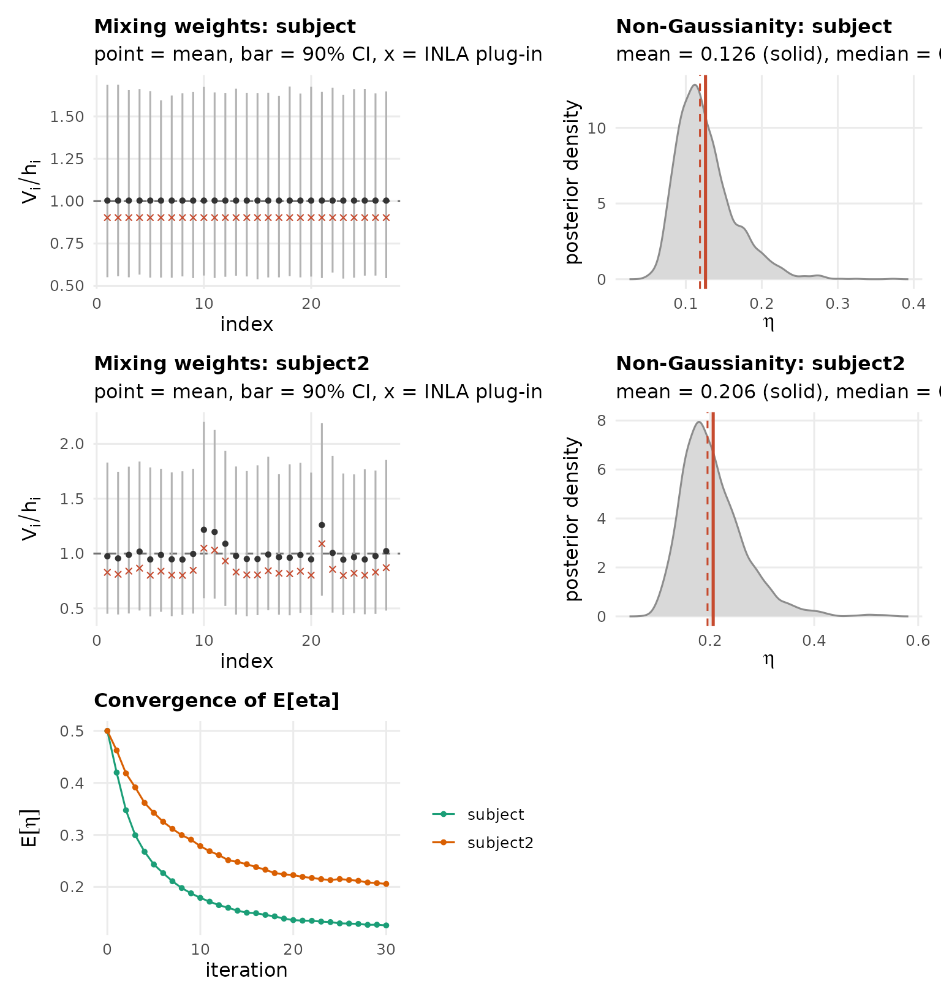
After fitting the latent non-Gaussian model we see that the intercept carries more non-Gaussianity than the slope. A couple of children have outlying baselines, while the growth rates are close to Gaussian.
bayes.factor(LnGM, n.samples = 30, seed = 1)
#> Bayes factor (non-Gaussian vs Gaussian): 7.88e+05
#> log10 BF = 5.90 (decisive)
#> weight ESS = 3.1 of 30 drawsAreal data: an intrinsic model (besag)
Residential burglary rates in 49 counties of Columbus, Ohio, come
with the spData package. Plot the response on the map
first:
library(sf); library(spdep)
map <- st_read(system.file("shapes/columbus.gpkg", package = "spData"), quiet = TRUE)
areal.plot(map, map$CRIME, title = "crime")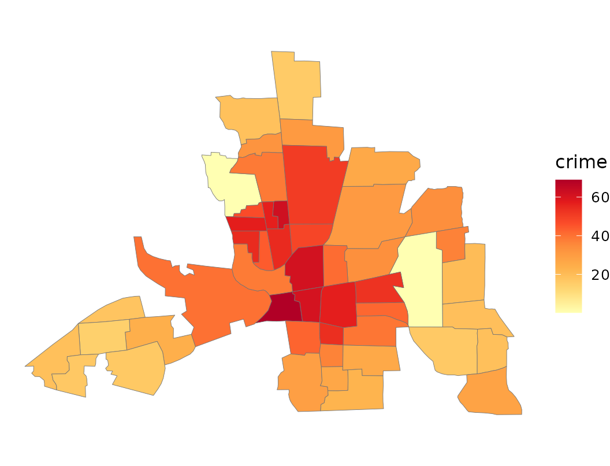
An intrinsic conditional autoregression (the besag
model) assumes neighbouring counties are similar, with Gaussian
differences across the edges of the adjacency graph,
The non-Gaussian version allows a few sharp boundaries between otherwise
smooth regions. Build the adjacency and fit the Gaussian model:
d <- st_drop_geometry(map[, c("CRIME", "HOVAL", "INC")])
d$s <- seq_len(nrow(d))
nb <- poly2nb(map)
Wadj <- Matrix::sparseMatrix(i = rep(seq_along(nb), lengths(nb)), j = unlist(nb), x = 1)
LGM <- inla(CRIME ~ 1 + HOVAL + INC +
f(s, model = "besag", graph = Wadj, scale.model = TRUE,
hyper = list(prec = list(prior = "loggamma", param = c(0.5, 0.01)))),
data = d, control.compute = list(config = TRUE))
LGM$summary.hyperpar
#> mean sd 0.025quant
#> Precision for the Gaussian observations 0.0080316 0.001644847 0.005242204
#> Precision for s 57.1638799 89.632926477 1.289090539
#> 0.5quant 0.975quant mode
#> Precision for the Gaussian observations 0.007880677 0.01168902 0.007604842
#> Precision for s 27.942104820 284.83005906 2.349096011
ng.check(LGM, compute.fixed = FALSE) # areal model auto-detected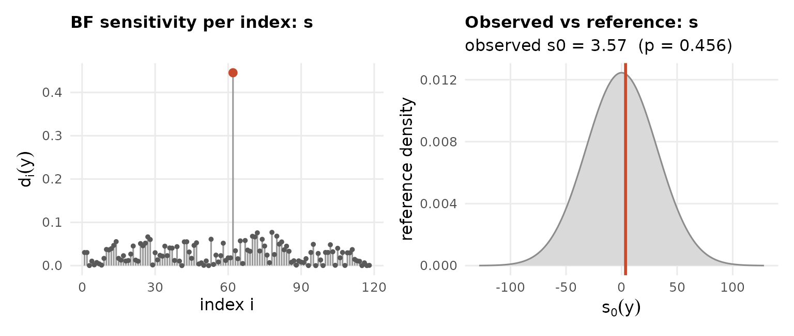
The 118 edges of this graph all show a similarly small discrepancy
from the Gaussian reference. This field is essentially Gaussian, and
both the previous checking procedure (ng.check) and the
latent non-Gaussian fitting (ngvb) show that.
LnGM <- ngvb(LGM)
#> Components: s [car]
#> ngvb: reached the iteration limit after 30 iteration(s); E[eta] = 0.073
plot(LnGM)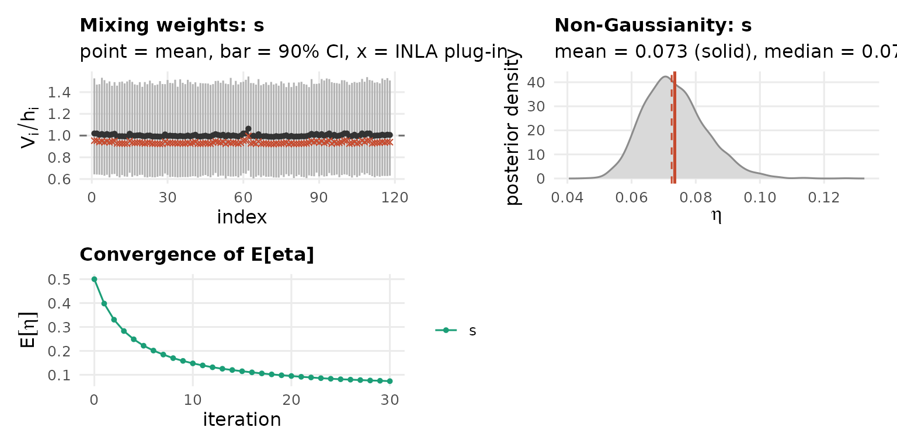
bayes.factor(LnGM, n.samples = 30, seed = 1)
#> Bayes factor (non-Gaussian vs Gaussian): 1.04
#> log10 BF = 0.02 (weak/none)
#> weight ESS = 25.6 of 30 drawsYour own precision matrix with ngvb_custom
If a model is not built in, you can supply the dependency matrix
and the constant vector
yourself with ngvb_custom(). The engine then forms
,
owns its normalizing constant, and ng.check() and
ngvb() work exactly as before.
For areal data the natural custom model is the simultaneous
autoregression (SAR), which uses
with
a row-standardised adjacency. This is worth stressing: among areal
models, the SAR is the one you build through ngvb_custom().
A proper CAR, or the intrinsic besag/ICAR family, cannot be written as a
custom
of this kind, because their precisions are specified conditionally or
intrinsically rather than through a whitening operator with a fixed
sparsity pattern. The intrinsic besag model is instead available by
auto-detection, as in the previous section, and there is no way to hand
it to ngvb_custom() as a bespoke operator. So for a custom
areal model, think SAR.
Unlike the intrinsic besag effect, the SAR mixing variables live on the counties themselves, so we can map them directly.
Here is the full definition, and each argument is explained just below it.
W <- Matrix::Diagonal(x = 1 / rowSums(Wadj)) %*% Wadj # row-standardise
N <- nrow(W)
eigenv <- Re(eigen(as.matrix(W), only.values = TRUE)$values)
op_sar <- ngvb_custom(
D = function(theta) {
rho <- exp(theta[2]) / (1 + exp(theta[2]))
sqrt(exp(theta[1])) * (Matrix::Diagonal(N) - rho * W)
},
h = rep(1, N),
ntheta = 2,
logprior = function(theta) {
rho <- exp(theta[2]) / (1 + exp(theta[2]))
stats::dnorm(theta[1], 0, 3, log = TRUE) + log(rho) + log(1 - rho)
},
lognc = function(theta, Vinv) {
rho <- exp(theta[2]) / (1 + exp(theta[2]))
0.5 * N * theta[1] + sum(log(1 - rho * eigenv)) +
0.5 * sum(log(Vinv)) - 0.5 * N * log(2 * pi)
})The arguments are:
-
D = function(theta)builds the dependency matrix as a sparseMatrix. Its rows are the driving-noise terms and its columns are the latent nodes. Heretheta[1]is the log precision andtheta[2]is the internal (unconstrained) version of , mapped into by the logistic function. INLA works on this internal scale, which is why the transform appears insideD. -
his the constant vector with , and recovers the Gaussian model. For a discrete areal model there is one innovation per node, sohis a vector of ones. -
nthetais the number of hyperparameters that INLA estimates, here two. -
logprior = function(theta)is the log prior density of the hyperparameters, written on the internal scale and including any change-of-variables Jacobian. This is the piece INLA adds to the log-posterior for . In this example there is a prior on the log precision, and a uniform prior on ; after the logistic transform the uniform density contributes the Jacobian term . If you omitlogprior, an independent on each internal hyperparameter is used. -
lognc = function(theta, Vinv)is optional but recommended when can get close to singular, as it does here when approaches one. It returns the log normalizing constant of the conditional Gaussian density, , and it receivesVinvso that the -dependent part of the determinant is included. For the SAR the log-determinant has the closed form , using the eigenvalues of , which is both fast and stable near the boundary. Whenlogncis omitted, the engine computes the determinant generically, which is fine for well-conditioned operators.
A couple of practical notes. D, logprior,
and lognc are evaluated in a separate R process where only
the base packages are attached, so any non-base function must be
namespace-qualified, which is why the code writes
Matrix::Diagonal and stats::dnorm, and uses
exp(t)/(1+exp(t)) rather than plogis. The data
those functions reference, such as W and
eigenv, is captured automatically.
With the operator defined, fit the Gaussian SAR through the same engine and then extend it:
LGM <- inla(CRIME ~ 1 + HOVAL + INC + f(s, model = ngvb_rgeneric(op_sar)),
data = d, control.compute = list(config = TRUE))
LnGM <- ngvb(LGM, components = list(s = op_sar), verbose = FALSE)
plot(LnGM)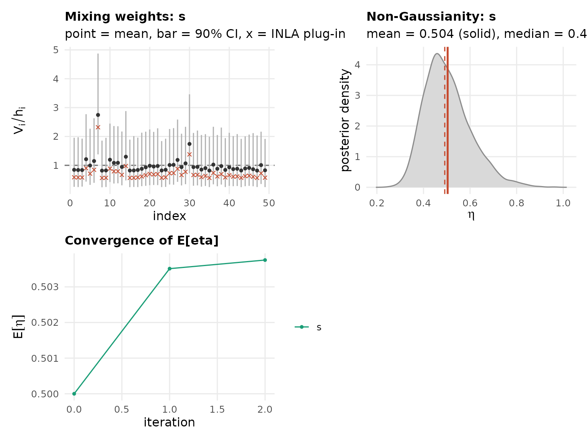
Because the SAR weights live on the counties, we can put them straight back on the map. Low values are yellow and high values are red, so the reddest counties are where the model added the most flexibility, meaning the largest local departures from the smooth spatial field:
areal.plot(map, LnGM$V$s, title = "V")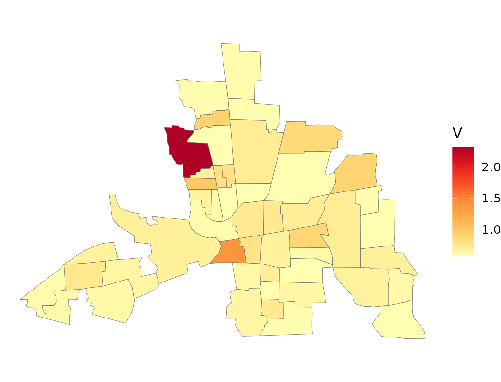
bayes.factor(LnGM, n.samples = 30, seed = 1)
#> Bayes factor (non-Gaussian vs Gaussian): 9.59
#> log10 BF = 0.98 (substantial)
#> weight ESS = 15.4 of 30 drawsThat is the whole custom interface. Give ngvb_custom() a
function D(theta) and a vector h, optionally a
prior and a normalizing constant, and any Gaussian model whose precision
factors as
becomes a latent non-Gaussian one.
Using operators from the ngme2 package
The ngme2 package is a good source of ready-made dependency matrices for models beyond ngvb’s own registry (general AR(p), tensor-product and bivariate operators among them). Its operator objects expose , the dependency matrix D you need, as a function of a hyperparameter, and . For an AR(1) field, for example:
ngme_ar1 <- ngme2::ar1(1:N)
op_ar1_ngme2 <- ngvb_custom(
D = function(theta) sqrt(exp(theta[1])) * ngme_ar1$update_K(theta[2]),
h = ngme_ar1$h,
ntheta = 2,
logprior = function(theta) {
stats::dnorm(theta[1], 0, 3, log = TRUE) + # precision: your choice
stats::dnorm(theta[2], 0, 1, log = TRUE) # matches ngme2's own prior_normal(0, 1) on theta_K
})theta[1] is your own added precision hyperparameter;
theta[2] is passed straight through to ngme2’s
update_K, which applies its own internal transform to
it.